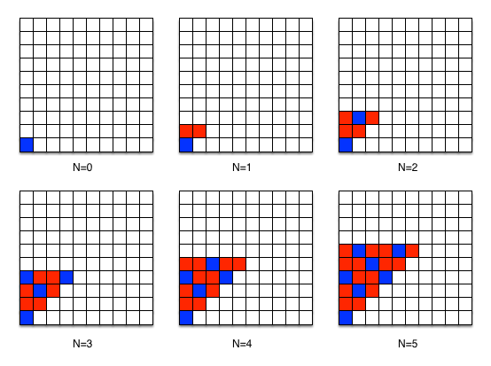

An Example: A Pattern of Squares¶
For our second example, we will look at a pattern of squares drawn on a grid. You may wonder why a programmer would be interested in drawing squares on a grid. Beyond this example serving us well for analyzing patterns in general, computer graphics ultimately boil down to drawing colored pixels on a 2D grid (the screen). In this particular example, we have an algorithm that is parameterized over one integer N and produces a pattern of red and blue squares on a grid that starts all white. The output of the algorithm for N = 0 to N = 5 is as follows:
To devise the algorithm, we should work through steps 1–4 (as we should with all problems). The next two videos walks through these steps to illustrate how we could come up with this algorithm.
Steps 1-3¶
First, Genevieve is going to develop an algorithm to put this particular pattern of colored squares on a grid.
Step 4¶
Having developed this algorithm, the next thing we need to do is test it out. This step involves executing the algorithm by hand on different inputs to see if you get the right answer.
Step 4 for pattern of squares (will require Duke login)
We note that there are many correct algorithms for this problem. Even if we restrict ourselves to the ones we can come up with naturally (that is, as a result of working through steps 1–4, rather than trying something bizarre), there are still many choices that are equivalent and correct. Which algorithm you come up with would be determined by how you approach step 1.
The algorithm in the video works from left to right, filling in each column from bottom to top. If we had worked step 1 by working from the top down, filling in each row from left to right, we might have ended up with the following slightly different algorithm instead:
Count down from N to 0 (inclusive), call each number you count "y" and
- Count down from 0 to y (inclusive), call each number you count "x" and
- if (x + y is a multiple of 3)
- then place a blue square at (x,y)
- otherwise place a red square at (x,y)
Of course, those are not the only two ways. You could have worked across the rows from the bottom up going right to left, and come up with a slightly different (but also equivalent) algorithm. Or even an entirely different approach, such as filling in the entire “triangle” with red squares, then going back to fill in the blue squares.
We emphasize this point because it is important for you to understand that there is always more than one right answer to a programming problem. You might work a problem and come up with a correct solution but find that it looks completely different from some other solution you know to be correct (e.g., the ones provided for some of the problems in this book, or a teacher’s solutions to an exam). Understanding this possibility is important so that you will not incorrectly think that a right answer is wrong because you have seen a different right answer. Not only is that experience frustrating, but it hinders your learning.
Next Steps¶
At this point, you should have a basic grasp on the idea of developing simple algorithms. This skill is one that you will practice as you go through the rest of this course, as every programming problem’s key component is figuring out the correct algorithm. We cannot underscore enough the importance of working through problems in a step-by-step fashion. Many novice programmers try to skip over the first several steps and plunge right into writing code. The result is frequently a disaster, which they end up spending orders of magnitude more time trying to fix than they would have spent planning correctly in the first place.
The reasons that novice programmers give for skipping straight to step 5 vary, but a common one is “Step 3 (writing a generalized algorithm) seemed too hard.” This reason is quite possibly the worst reason to skip over step 3—if making a correct plan is proving hard, how can you possibly hope to write correct code without the plan? It is better to repeat steps 1 and 2 on more examples until you can find the pattern and write down the algorithm. Another common reason that novice programmers give for skipping the first steps is “to save time”; however, they often then report spending countless hours trying to debug the resulting code. It is well worth ten or even thirty minutes of planning to avoid trying to debug a hopeless mess for multiple hours!
As you become more and more practiced at this process, you may find that steps 1–4 come naturally, and you can do them in your head without writing them down—much like what happens with basic mathematical skills. When these improvements in your programming skills happen, then there is nothing wrong with doing the easier steps in your head, as long as you are sure that you are doing them correctly. However, whenever you are programming at the boundaries of your abilities, you will need to go through these steps—so it is quite important to remember how the full process works even as you become more skilled.